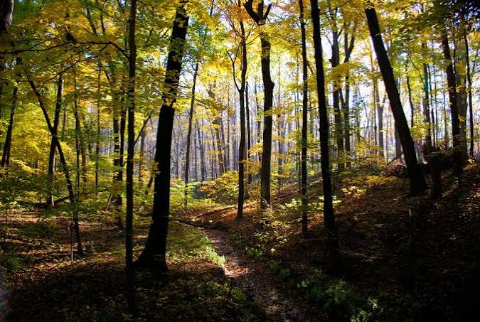

Pacific Trails Resort has 5 miles of hiking trails and is adjacent to a state park. Go it alone or join one of our guiding hikes.
Ocean kayaks are available for guest use.
While anytime is a good time for bird watching at Pacific Trails, we offer guided birdwatching trips at sunrise several times a week.
Copyright © 2018 Pacific Trail Resort
yourfirstname@yourlastname.com